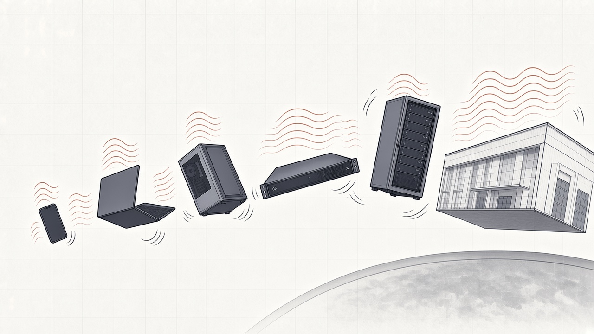

Why cooling in a vacuum is so much harder than on your desk.

On your desk, a laptop dumps its heat into the air. A fan blows air over a small heatsink, and the air carries the heat away. In space there is no air. The only way out is to radiate the heat, and at laptop temperatures that works about as well as still air with the fan switched off. Pick something you know and see what happens.
A companion to watts-to-space, the full model for engineers. This page uses the same physics, simplified: a box or a flat panel at one temperature, radiating to the dark sky.
Pick a device
If the heat spread evenly over the whole case, this is the temperature the case would settle at, running flat out.
Real devices have hot spots: the chips run much hotter than the case, and without air the fan and heatsink do nothing. Getting the heat from a chip to the outside is the hard part, and the subject of Part 1 of the full model.
Give it a radiator instead: a white-painted panel radiating from both faces to the dark sky. The hotter the panel runs, the smaller it can be, but the electronics feeding it have to run hotter still. Then power it from a solar array making 250 W per m² in sunlight, the figure SpaceX gives for its AI satellites, in an orbit that never enters Earth's shadow, so it needs no battery.
The denser the electronics, the worse it gets: a GPU rack packs 132 kW into less than a square metre of floor. At 60 °C the solar array comes out about five times the radiator, the "5:1" often quoted for space data centers. The full model shows why a real heat path, which cannot run the radiator as hot as the chips, pushes the radiator larger.
How much heat each square metre moves for every degree of temperature difference. Every cooler on Earth gets to use the upper rows of this chart. In space there is no air or water outside to carry heat away, so only the bottom row is left.